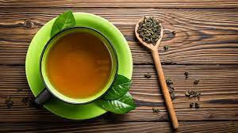
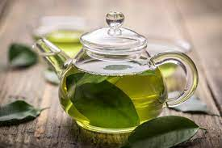
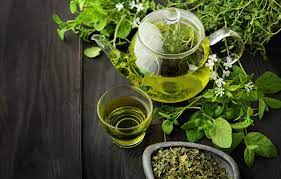
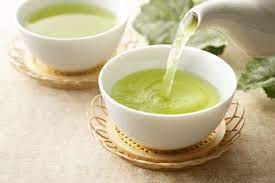
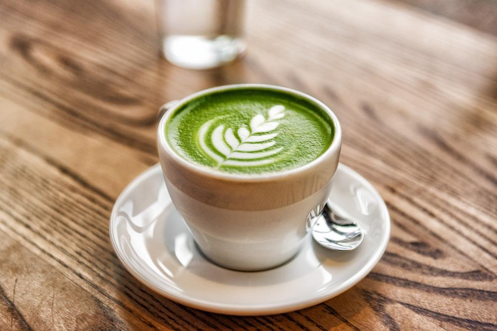

"SAKURA TEA"
O nama
| POCETNA | O NAMA | PROIZVODI | KONTAKT |
|---|
Lista proizvoda:
Čaj (kin. 茶 - čá, korejski 차, hindski चाय „chai“) je topli napitak veoma popularan u mnogim zemljama.
To se naročito odnosi na Aziju, pre svega Kinu, Englesku, Rusiju i zemlje Bliskog istoka.
Ovo aromatično piće se obično priprema sipanjem vruće ili ključale vode preko osušenih listova biljke Camellia sinensis,
zimzelenog žbuna autohtonog u Aziji. U našem jeziku termin čaj označava uglavnom biljni čaj (od nane, kamilice i sl.).
Nakon vode, čaj je najšire upotrebljavan napitak u svetu. Neki čajevi, poput Dardžilinga i kineskog zelenog čaja,
imaju osvežavajući, blago gorki i oštar ukus, dok ostali imaju znatno drugačije profile koji ubrajaju slatke,
orašaste, cvetne ili travnate reference.
Čaj potiče iz Kine, verovatno kao medicinsko piće.[6] Došao je na Zapad preko portugalskih sveštenika i trgovaca,
koji su ga prenosili tokom 16. veka. Pijenje čaja postalo je moderno među Britancima tokom 17. veka, koji su počeli
veliku proizvodnju i komercijalizaciju biljaka u Indiji da bi zaobišli kineski monopol tog vremena.[8]
Izraz biljni čaj obično označava infuzije voća ili biljaka napravljenih bez biljke čaja, kao što su natapanje šipurka,
kamilice ili roibosa. Ovi su takođe poznati kao tisanes ili biljne infuzije da se razlikuju od „čaja“ kao što se obično
tumači.




